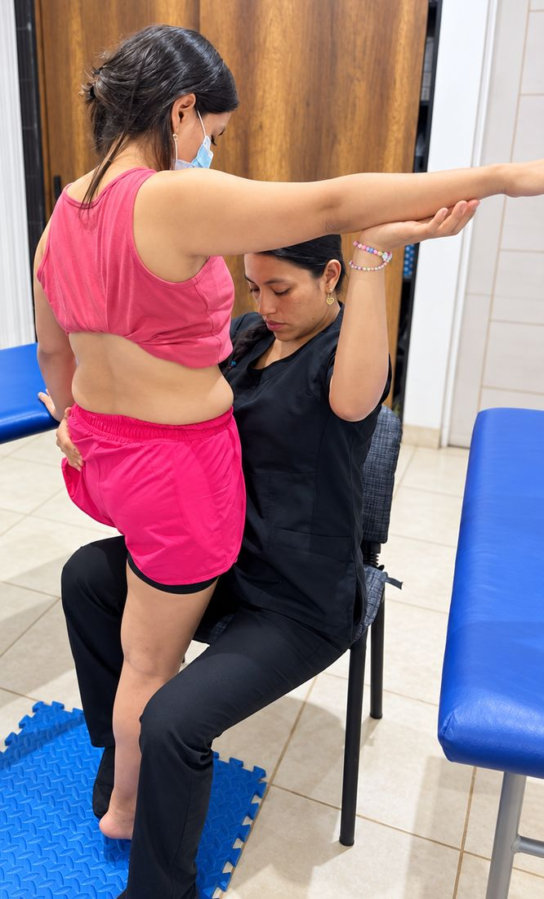

Eje de atención
Rehabilitación neurológica
Movimiento, función y autonomía.
Es el área central de HEMISFERIO. La valoración y el tratamiento se apoyan en el Concepto Bobath, un enfoque para personas con alteraciones del movimiento y la función asociadas a condiciones neurológicas.
El trabajo busca favorecer la organización del movimiento, el control postural, el equilibrio, la coordinación y la funcionalidad, según las características y los objetivos de cada persona.
A quién se dirige
Niños, adultos y personas mayores con alteraciones del movimiento asociadas a condiciones como:
- Accidente cerebrovascular (ACV)
- Traumatismo craneoencefálico
- Enfermedad de Parkinson
- Esclerosis múltiple
- Lesiones medulares
- Parálisis cerebral
- Alteraciones del equilibrio
- Alteraciones de la marcha
- Otras condiciones neurológicas que afectan el movimiento y la funcionalidad
Cada proceso es distinto. La evaluación inicial permite definir objetivos de trabajo según la condición, la etapa y las metas de cada persona.
Respaldo formativoFormación básica y avanzada en Concepto Bobath de nuestra profesional a cargo.
Agenda una evaluación